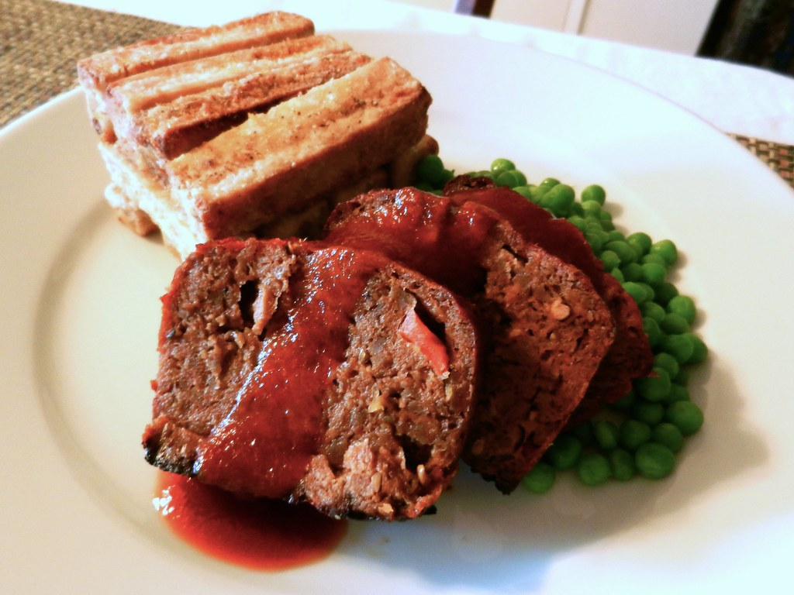

Home
Dylan's Meatloaf

Basic Meatloaf Recipe
Ingredients that you will need:
- 2 lbs. Lean Ground Beef
- 1 Yellow Onion Diced
- 3/4 C Ketchup
- 1/3 C Brown Sugar
- 1 C Breadcrumbs
- 1 Egg
- Salt & Pepper to Taste
Instructions:
- Preheat Oven to 400°F.
- Mix Ground Beef, Egg, 1/2 C Ketchup, Breadcrumbs, and seasonings in a bowl.
- Form loaf in pan or use loaf pan.
- Bake for 45 minutes covered in foil.
- Take reserve Ketchup and Brown Sugar, mix for topping.
- Top Meatloaf with mixture, bake uncovered for an additional 15 minutes or until internal temperature is 165°F.
- Yell at Refs in Hawkeye's Game and enjoy.